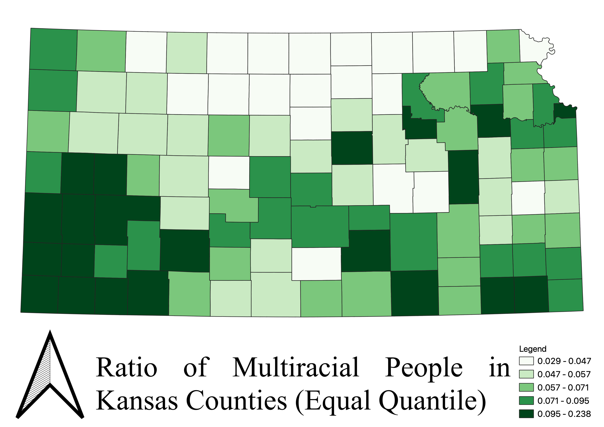

Homework 6: Census data choropleth
James Hoglund
This first map is the Equal Quantile map. This breaks the counties into equal sized groups. That is, there are an equal amount of counties for each quantile. One drawback to this method is that the quantile ranges are disproportionate. For example, the darkest green category has a range of 0.188, while the lighest green category has a range of 0.018. This can often be misleading when there are outliers in the set of counties.

The next map is the Natural Breaks map. This breaks the data up into groups by "natural" breaks in the data. One con to this method is lack of diversity in the map. For example in the below map, the majority of the counties are white. Contrastly, there are only 5 counties with the darkest green color.
The final map is the Pretty Breaks map. As you can see all of the proportions are "pretty" numbers, excluding the highest and lowest data points. While this legend is the most aesthetically pleasing, it is often not the best method to use, since data is rarely broken up prettily.
Data used for this project
CSV dataset